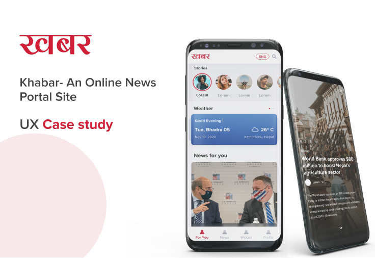
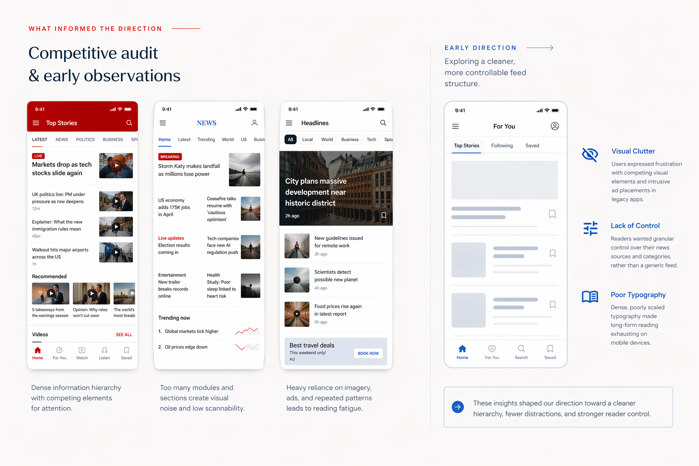
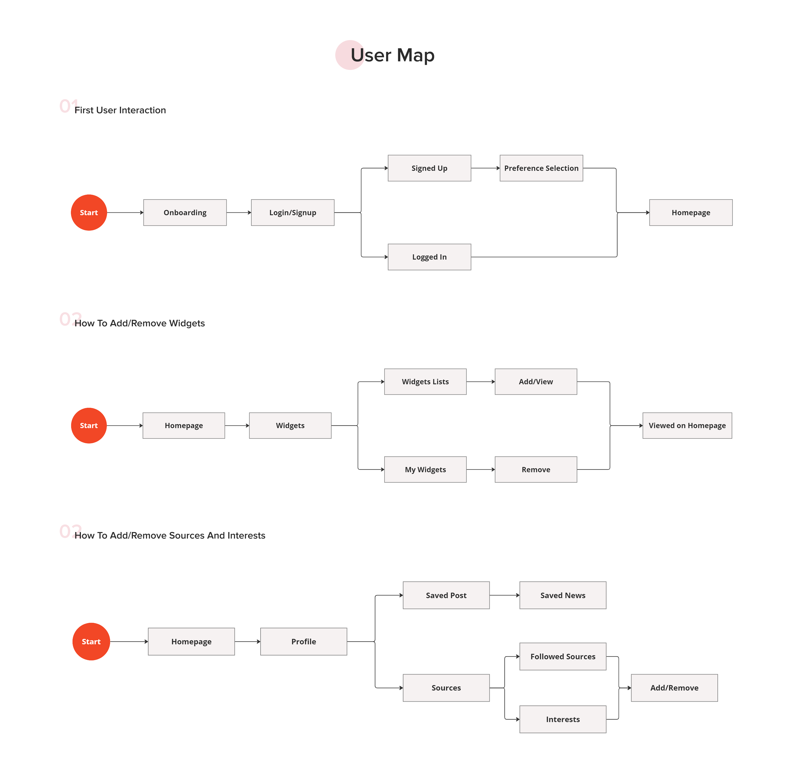
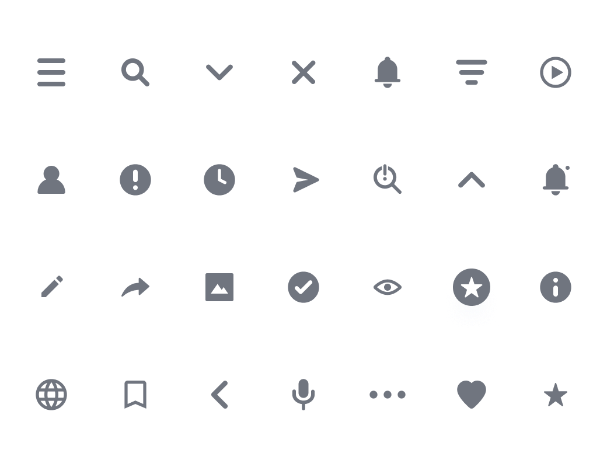
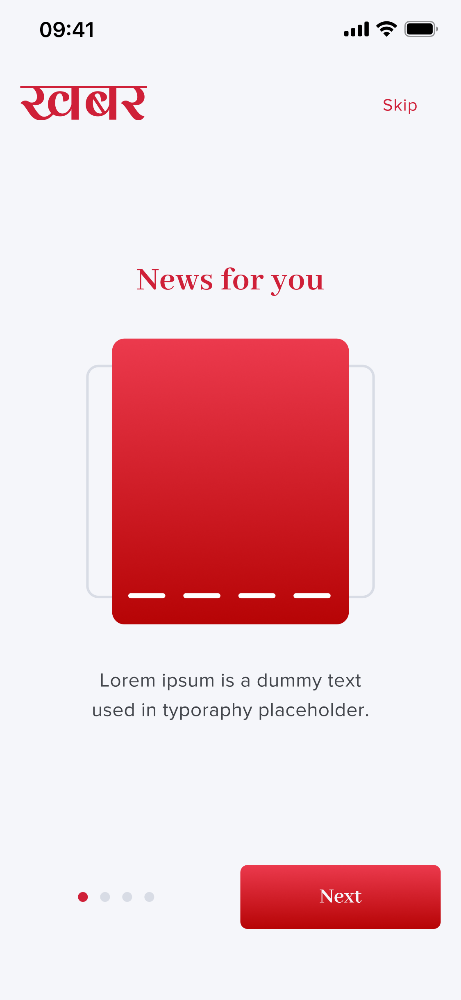
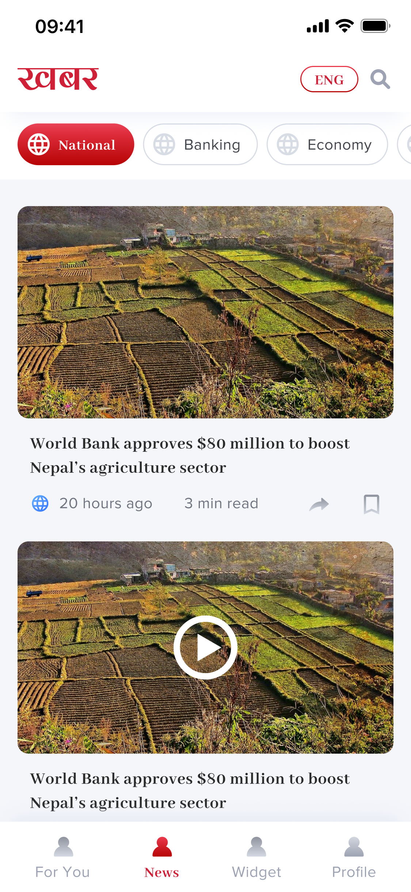
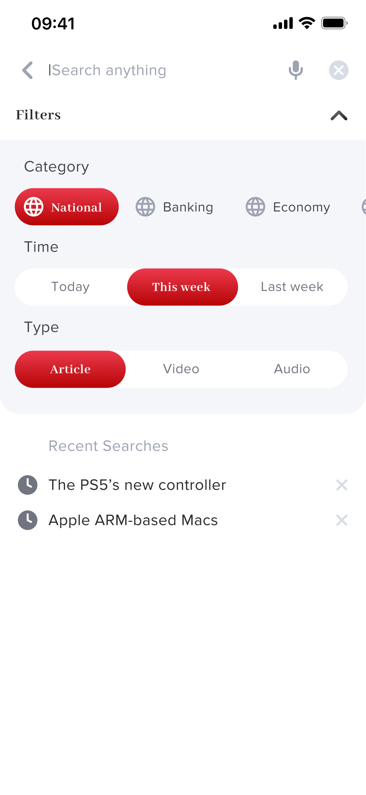
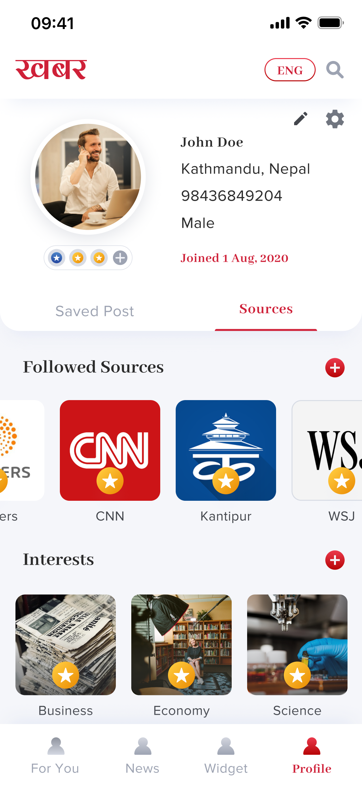

Aa
Proxima Nova
Primary Typeface
Aa Bb Cc Dd Ee Ff Gg Hh Ii Jj Kk Ll Mm Nn Oo Pp Qq Rr Ss Tt Uu Vv Ww Xx Yy Zz
1234567890 !@#$% &*()
A freelance project exploring calmer, personalized mobile news. Creating structure out of chaos to deliver a focused reading experience.

Many mobile news experiences feel cluttered and hard to personalize, overwhelming modern readers.
A modular, reader-focused mobile experience with integrated personalization and utility.
Users expressed frustration with competing visual elements and intrusive ad placements in legacy apps.
Readers wanted granular control over their news sources and categories, rather than a generic feed.
Dense, poorly scaled typography made long-form reading exhausting on mobile devices.

To solve the cognitive overload, we mapped out a clear structural hierarchy. The core focus was separating discovery, reading, and utility into distinct, manageable flows.
Streamlined flow for defining initial interests and preferred publishers.
Modular dashboard allowing users to pin weather, markets, or specific topics.
Deep controls to mute, follow, or prioritize specific news outlets.

Focusing on typographic hierarchy, comfortable line lengths, and generous whitespace to reduce eye strain.
Allowing users to shape their feed without overwhelming them with complex settings.
Integrating useful local widgets (weather, forex, market) naturally into the reading flow.
Three pillars - type, color, and iconography - working together to keep the reading experience calm, confident, and unmistakably Khabar.
Proxima Nova
Primary Typeface
Aa Bb Cc Dd Ee Ff Gg Hh Ii Jj Kk Ll Mm Nn Oo Pp Qq Rr Ss Tt Uu Vv Ww Xx Yy Zz
1234567890 !@#$% &*()
The Khabar red anchors the brand, with supporting tokens for interaction, text hierarchy, and feedback states.
Brand
Primary
#CF2038
Secondary
#4693EE
Surface & Text
Text
#2B2B2B
Light Text
#707580
White
#FFFFFF
Feedback
Success
#34C05B
Error
#E5342E
A tight icon set spanning navigation, actions, status, and utility states - kept visually uniform across the app.

A selection of final interface designs demonstrating the modular approach applied across key user flows.
Guiding users to select their core interests for a personalized start. Focus on clear preference selection and account creation.




Show the modular feed with news tailored to user interests. A tailored mix of essential news and selected topics.
Typography-led design minimizing cognitive load while reading. Focus on the clean, readability-first article view.



A search layer with more structure than most news apps offered. Beyond keyword search with recent history, users could filter results by content category (National, Banking, Economy), time period (Today, This Week, Last Week), and content type (Article, Video, Audio). This made Khabar's search useful for specific research moments - not just headline scanning - and acknowledged that readers came to the app for different reasons at different times.


Market and weather data integrated smoothly into the daily flow. Taller mockup for the widget stack and standard for details.


The profile layer was where the reader's Khabar experience lived permanently. Saved articles and followed sources sat under separate tabs. The Sources & Interests section let users follow major international and Nepali publishers - CNN, Reuters, WSJ, Bloomberg, Kantipur - and search or browse by interest category. Settings covered theme (dark/light), language toggle (Nepali/English), push notifications, and video autoplay. The Achievements system added a lightweight engagement layer - badges like Marathoner, Night Owl, and High Noon - rewarding consistent reading habits without turning the app into a gamified distraction.
Designing Khabar made clear that the hardest part of a content product isn't the content - it's the structure around it. Every personalization feature, widget, and language option only works if the underlying hierarchy makes sense. The biggest design decisions weren't about what to add, but about how to sequence information so that the right thing appeared at the right moment.
"Designing Khabar reinforced that the most impactful work isn't adding features - it's creating structure that makes every feature feel effortless."